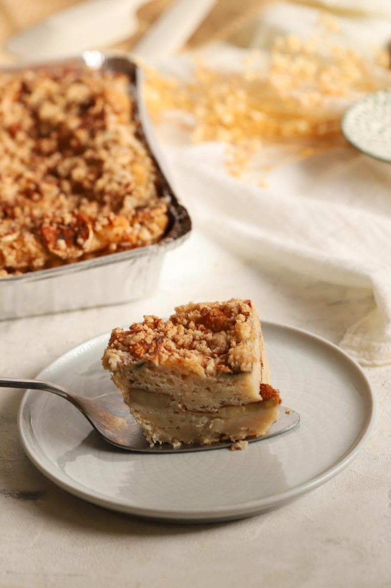
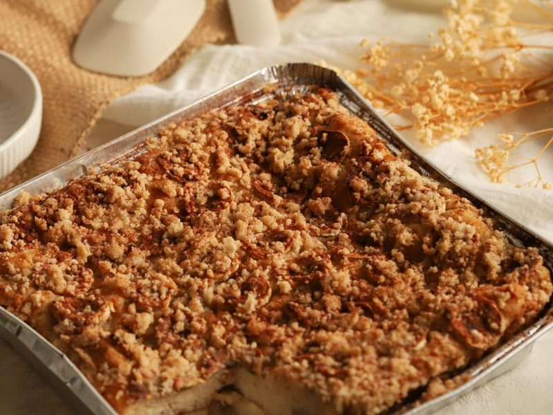
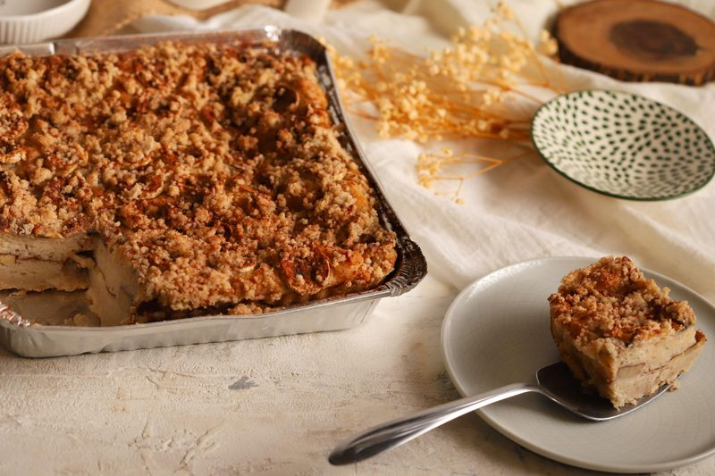

Square Banana Maple Cake
A gluten-free, vegan base sweetened entirely with maple, layered with banana and finished with a crumb top. Baked by temperature, not the clock.
Skip to recipe ↓This started as a plain vanilla base I use for everything. Then I pulled the cane sugar out and let maple carry the whole thing — sweetness, moisture, and a little acidity to wake up the baking soda. Layer banana through the middle, put a crumb on top, cut it into squares.
The mixing barely matters here. It’s a gluten-free, vegan batter, which means there’s no gluten network and no eggs building structure — the water does that job, through the psyllium and flax. So most of this recipe is about hydration and holding your nerve at the oven, not technique at the bowl.
What’s Doing the Work
Maple Syrup
It’s the only sweetener in the base now, and it’s pulling triple duty. Sweetness, obviously. But it’s also about a third of the batter by weight, so it’s a big part of the moisture — that’s why the oat milk drops way down when the maple goes up. And maple is mildly acidic, which matters: with the vinegar gone, the maple is what activates the baking soda for lift. Swap it for a neutral liquid sweetener and you’ll get a flatter, blander cake.
Psyllium and Flax
This is your structure. No eggs, no gluten — the psyllium and flax gel is what holds the crumb together and traps the gas from the leavening. Pre-gel both in the hot water and let it thicken before anything else touches it. Skip that step and you get gel beads in the batter instead of an even network.
The Leavening
Baking soda does most of the lift here at 3.5g, with a little double-acting baking powder for insurance in the oven. The soda needs acid to react — that’s maple’s second job. Don’t go adding vinegar back in unless you also pull the soda down, or you’ll overshoot and taste it in the crumb.

Square Banana Maple Cake

Equipment
- 8-inch square pan
- Kitchen scale
- Two bowls
- Whisk and spatula
- Instant-read thermometer
Base batter
| Ingredient | Weight |
|---|---|
| Rice flour | 68.4g |
| Potato starch | 49.9g |
| Tapioca | 17.5g |
| Oat flour | 13.9g |
| Maple syrup | 136g |
| Sunflower oil | 45.5g |
| Hot water | 39.9g |
| Oat milk | 13.5g |
| Flax | 7.7g |
| Baking soda | 3.5g |
| Baking powder (double-acting) | 2.5g |
| Salt | 2.3g |
| Xanthan | 0.8g |
| Psyllium husk | 0.6g |
| Vanilla | To taste |
| Total | 402g |
Filling
| Ingredient | Amount |
|---|---|
| Bananas | 3 |
| Maple syrup | To taste |
Crumb topping
| Ingredient | Weight |
|---|---|
| Rice flour | 40g |
| Oat flour | 15g |
| Organic cane sugar | 30g |
| Sunflower oil | 25g |
| Salt | 0.5g |
| Total | 110.5g |
Instructions
- Pre-gel the psyllium and flax in the hot water. Whisk them in and let it sit until it thickens to a gel, about 5 to 10 minutes. This is your structure — don’t rush it.
- Make the crumb. Rub the sunflower oil into the rice flour, oat flour, cane sugar, and salt until it clumps into irregular pieces. Don’t overwork it — you want pebbles, not sand. Chill it while you build.
- Combine the dry base ingredients in one bowl. In another, combine the wet — maple syrup, oil, and oat milk — with the psyllium and flax gel.
- Bring wet and dry together and mix just until even. Add vanilla to taste. Let the batter sit while you slice the bananas — the hydration matters more than the mixing.
- Scoop half the batter into a greased or lined 8-inch square pan and level it. Line with sliced banana and drizzle maple. Scoop the rest over the top and level again.
- Finish with more banana, more maple, and the chilled crumb.
- Bake at 340°F for 35 minutes, or until the internal temp clears 200°F. The thermometer is the doneness test, not the timer — with this much fruit and maple, color will lie to you.
- Cool fully before cutting. Gluten-free crumb sets on the way down — cut it warm and it’ll gum.
Common Failures and Fixes
- Gummy band where the bananas sit? The bananas are wet, they’re sitting in the middle of your crumb, and the maple drizzle makes it worse. Toss the sliced banana in a light dusting of tapioca — a gram or two — before it goes in. It binds the free water at the boundary. Enough to fix the band, not enough to taste.
- Sunken, gummy center? Underbaked. This much maple and fruit holds heat and reads done on color long before it’s set inside. Trust the thermometer — 200°F or higher, no exceptions.
- Dense, no lift? Either your psyllium and flax gel never set up, or your baking soda is old. Pre-gel fully before mixing, and make sure the soda is fresh — it’s doing most of the work.
- Crumb went flat and greasy? You overworked it, or it warmed up before it hit the oven. Keep it in irregular clumps and chill it until the moment it goes on top.
That’s the whole thing. Weigh everything, trust the thermometer, and let it cool all the way down before you cut.